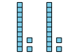
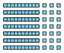

El propósito de esta lección es que los estudiantes comprendad representaciones de la multiplicación de números entre 11 y 19.
Materiales.
Actividad 1
Bloques en base 10
Narrativa de la lección.
En esta lección, usan lo que saben sobre multiplicar números de un solo digito para extenderlo a multiplicar con números del 11 al 19 de manera significativa. Se exploran diferentes representaciones de estrategias para multiplicar estos números, que serán útiles en la siguiente lección.
Preguntas de reflexión.
¿Cómo apoyó el trabajo previo de los estudiantes con diagramas de área en su trabajo de hoy con la multiplicación de números del 11 al 19?
SubsubsecciónCalentamiento (10 mins)
Tiempo recomendado.
10 minutos
Narrativa.
El objetivo de este calentamiento es que los estudiantes vean que hay diferentes formas de representar 2 grupos de 12, pero algunas son más útiles que otras. Los estudiantes pueden observar varias cosas sobre las imágenes, pero es importante discutir cómo la organización por valor posicional y la descomposición pueden ayudar a encontrar el total.
Lanzamiento.
Grupos de 2
Mostrar la imagen.
“¿Qué observan? ¿Qué se preguntan?”
1 minuto: tiempo para pensar en silencio
Desarrollo de la actividad.
“Discutan con su pareja lo que pensaron”
1 minuto: discusión en pareja
Comparta y registre las respuestas.
Calentamiento56.Observa y pregúntate: Veamos grupos.
¿Qué observas? ¿Qué te preguntas?

Solución.
Los estudiantes pueden observar:
Todos los diagramas muestran 2 grupos.
Cada grupo tiene 12 cuadrados.
Dos de los diagramas muestran decenas y unidades.
Es más fácil contar los 12 en los diagramas con grupos de diez porque puedo pensar 10, 11, 12.
Cada diagrama tiene el mismo número de cuadrados.
Se puede pensar en todos los diagramas como \(2 \times 12\text{.}\)
¿Por qué están dispersos los cuadrados en uno de los diagramas?
¿Por qué hay decenas y unidades en algunos de los diagramas?
¿Por qué están de lado las decenas y unidades en el último diagrama?
Síntesis de la actividad.
“La imagen de la izquierda es un dibujo de grupos iguales. Las otras imágenes son diagramas en base diez. ¿En qué se parecen y en qué son diferentes estas representaciones?” (Todos muestran 12. Todos muestran 2 grupos del mismo tamaño. En los diagramas en base diez se pueden ver las decenas más fácilmente. Es más difícil ver las decenas en el primer dibujo.)
SubsubsecciónActividad 1 (20 mins)
Tiempo recomendado.
20 minutos
Narrativa.
En esta actividad, los estudiantes aprenderán a descomponer un número mayor que diez en decenas y unidades al multiplicar, utilizando la propiedad distributiva, creando dos productos más pequeños. Los bloques en base diez les ayudarán a visualizar este proceso. Esta habilidad les será útil en lecciones futuras sobre multiplicación y división con números hasta 100.
Cuando los estudiantes ven que pueden descomponer un número entre 11 y 19 en decenas y unidades y usar esto para multiplicar números entre 11 y 19, buscan y hacen uso de la estructura (MP7).
Materiales.
Bloques en base 10
Lanzamiento.
Grupos de 2
Entregue a los estudiantes bloques en base diez.
Desarrollo de la actividad.
“Tómense unos minutos para examinar la estrategia de Tyler y decidir si están de acuerdo o en desacuerdo con ella”
2–3 minutos: tiempo de trabajo independiente
3–4 minutos: discusión en parejas
Identifique a los estudiantes que conectan las expresiones \(7 \times 10\) y \(7 \times 3\) con la parte de las decenas y unidades del diagrama de valor posicional y \(7 \times 13\) con todo el diagrama.
Pida a los estudiantes que compartan por qué estuvieron de acuerdo o en desacuerdo con la estrategia de Tyler, centrándose en utilizar el diagrama de valor posicional como justificación.
Considere preguntar:
“¿En qué parte del diagrama de valor posicional vemos \(7 \times 13\text{?}\)”
“¿De dónde vienen el 10 y el 3?”
“¿Cómo podrían usar el diagrama de valor posicional para averiguar cómo encontrar el valor de \(7 \times 13\text{?}\)”
“Ahora, solos, usen el método de Tyler para encontrar el valor de \(3 \times 14\)”
2–3 minutos: tiempo de trabajo independiente
“Compartan su solución y su razonamiento con su compañero”
2–3 minutos: discusión en parejas
Actividad57.Un factor mayor que diez.
Tyler dice que puede usar bloques en base diez para encontrar el valor de \(7\times 13\) porque él se sabe \(7\times 10\) y \(7\times 3\text{.}\) Él dice que este diagrama muestra que su forma de pensar es correcta.

¿Estás de acuerdo o en desacuerdo? Explica tu razonamiento.
Usa el método de Tyler para encontrar el valor de \(3\times 14\text{.}\) Explica o muestra tu razonamiento.
Solución.
Ejemplo de respuesta: Estoy de acuerdo porque todo el diagrama representa \(7 \times 13\text{,}\) pero veo el \(7 \times 10\) en las decenas y el \(7 \times 3\) en las unidades. Entonces, para encontrar el valor de \(7 \times 13\) se puede sumar el \(7 \times 10\) y el \(7 \times 3\text{.}\)
42. Ejemplo de respuesta: \(3 \times 10 = 30\text{,}\)\(3 \times 4 = 12\text{,}\) 30 más 12 es 42.
Para los estudiantes con dificultades.
Si los estudiantes dicen que no identifican \(7\times 10\) y \(7\times 3\) en el diagrama de Tyler, considere preguntar:
“¿En qué parte del diagrama ves \(7\times 13\text{?}\)”
“Si separamos las decenas y las unidades, ¿qué expresión podemos usar para describir las decenas?, ¿las unidades?”
Síntesis de la actividad.
Muestre bloques en base diez o diagramas de valor posicional que los estudiantes utilizaron para resolver el problema. Mientras los estudiantes explican su trabajo, escriba expresiones de multiplicación para representar sus ideas.
“¿Cómo muestra este diagrama (o los bloques en base diez) que el método de Tyler se puede usar para multiplicar \(3 \times 14\text{?}\)” (Podemos ver que hay 3 decenas que son 30. Podemos ver que hay 3 grupos de 4 unidades que son 12. \(30 + 12\) es 42. El diagrama completo representa \(3 \times 14\text{.}\))
Si queda tiempo, pida a los estudiantes que encuentren el valor de \(4 \times 12\) y \(5 \times 16\) utilizando los bloques en base diez y la estrategia de Tyler.
SubsubsecciónActividad 2 (15 mins)
Tiempo recomendado.
15 minutos
Narrativa.
El objetivo es que los estudiantes entiendan las diferentes formas de representar la multiplicación de un número entre 11 y 19. Analizan diagramas de área con cuadrícula, bloques en base diez y diagramas de área con longitudes de lado. Al discutir cómo estos diagramas representan el mismo producto, los estudiantes desarrollan razonamiento abstracto y cuantitativo.
Lanzamiento.
Grupos de 2
“Vamos a examinar tres formas diferentes en las que algunos estudiantes mostraron la misma expresión. ¿Qué observan? ¿Qué se preguntan?” (Los estudiantes pueden notar: Se pueden ver todos los cuadrados en los primeros 2 diagramas, pero no en el último. El diagrama del medio parece bloques en base diez. Los estudiantes pueden preguntarse: ¿Por qué elegirías usar uno de estos diagramas? ¿Qué números estaban multiplicando?)
1 minuto: tiempo para pensar en silencio
Compartir respuestas.
Desarrollo de la actividad.
“Con su compañero, digan en qué parte ven los factores en cada diagrama y en qué parte ven el producto en cada diagrama”
5-7 minutos: tiempo de trabajo en pareja
Actividad58.Formas de representar.
Andre, Clare y Diego representaron la misma expresión. Estas son sus representaciones.
Andre
Clare
Diego
¿En qué parte de cada diagrama ves los factores?
¿En qué parte de cada diagrama ves el producto?
Solución.
Veo los factores en las longitudes de los lados de los diagramas de Andre y Diego. En el de Clare veo 3 filas y 15 en cada fila.
En los diagramas de Andre y Clare veo el producto en el número total de cuadrados. En el diagrama de Diego veo 30 y 15. Para obtener el producto, sumaría estos números.
Síntesis de la actividad.
“¿En qué se parecen estas formas de representar \(3 \times 15\text{?}\)” (Todas representan 3 veces 15. Todas muestran que el 15 se descompone en 10 y 5. Todas tienen forma de rectángulo.)
“¿En qué son diferentes estas formas de representar \(3 \times 15\text{?}\)” (Clare usó bloques en base diez, y Andre y Diego usaron rectángulos. Diego no mostró los cuadrados en su rectángulo, pero Clare y Andre sí lo hicieron.)
“¿Cómo podríamos representar con expresiones las estrategias que se muestran en todos los diagramas?” (\(3 \times 10\) y \(3 \times 5\) o \(10\times 3\) y \(5\times 3\))
Desarrollo de lenguaje matemático.
Apoyos para la discusión de MLR8. Síntesis: Muestre una presentación visual de los diagramas. A medida que los estudiantes comparten sus observaciones, anote la presentación para ilustrar conexiones. Por ejemplo, en cada diagrama, anote la descomposición de 15 en 10 y 5 circulando los grupos de 10 y los grupos de 5.
Avances: Escuchar, Representar
Acceso a estudiantes con discapacidades.
Representación: Acceso para la percepción. Muestre cómo ve el producto de cada uno de las 3 representaciones utilizando un problema diferente para apoyar la comprensión del contexto.
Apoya la accesibilidad para: Procesamiento conceptual, Procesamiento visual-espacial
SubsubsecciónSíntesis de la lección (10 mins)
Muestre:
\(7 \times 6\)
\((5 \times 6) + (2 \times 6)\)
\(3 \times 15\)
\((3 \times 10) + (3 \times 5)\)
“Hoy vimos distintas formas de representar estrategias que podemos usar para multiplicar números del 11 al 19. ¿En qué se parecen las estrategias que usamos para multiplicar números del 11 al 19 y las estrategias que usamos en lecciones anteriores para multiplicar números más pequeños?” (Podemos usar hechos de multiplicación que conocemos para encontrar hechos de multiplicación que no conocemos. Podemos descomponer uno de los factores en partes más pequeñas para facilitar la multiplicación.)
Encuentra el valor de \(5\times 15\) y explica cómo está representado esto en el diagrama.
Solución.
75. Ejemplo de respuesta: Puedo ver \(5\times 10\) en la parte grande del rectángulo y \(5\times 5\) en la parte más pequeña. Si sumo esas partes del rectángulo, encuentro el producto de \(5\times 15\text{,}\) que es 75.
Posibles errores.
El trabajo en esta lección se basa en los conceptos de multiplicación desarrollados en una unidad anterior.